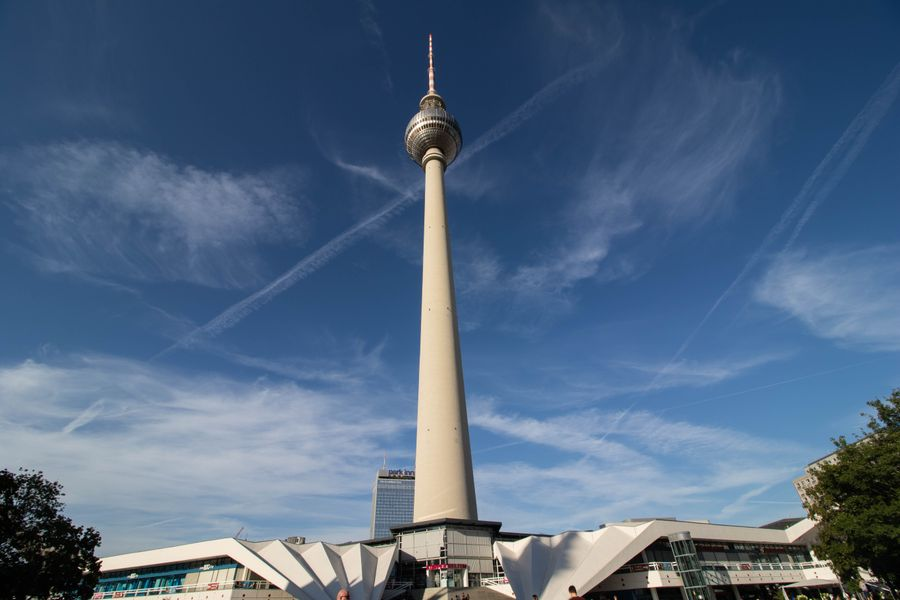

你不知道的德国 · 39
🏙️ 柏林和慕尼黑
像两个国家
arm aber sexy · 房租差一倍 · Semmel 还是 Schrippe
🏙️ 体量就不在一个量级
柏林约 380 万人，慕尼黑约 150 万人。柏林的面积将近 900 平方公里，是慕尼黑的近三倍——柏林是铺得很开，慕尼黑是密实紧凑。
更直观的差别是气质：柏林像一座「还没修完」的城市，到处是工地；慕尼黑像一座「已经修好了」的城市，干净、整齐、贵。
🏙️ 柏林人爱自嘲：我们很穷，但这不重要。arm aber sexy 这句 2003 年出自当时的市长，后来成了柏林的城市标签。
🇩🇪 Auf Deutsch
Berlin hat rund 3,8 Millionen Einwohner, München etwa 1,5 Millionen. Berlin ist arm, aber groß – München ist reich, kompakt und teuer.
💶 房租：一个最贵，一个涨最快
慕尼黑常年是全德房租最贵的城市，新签合同经常在每平米 20 欧元以上。柏林历史上以「便宜」著称——这正是它吸引艺术家和创业者的原因。
但近十年柏林涨得最凶，涨幅多次排在全国前列。老柏林人抱怨的不是房租贵，而是房租变得快：五年前签的合同和现在完全是两个世界。
💶 两座城市用完全不同的工具对付同一件事：柏林搞租金管制（Mietpreisbremse）、甚至公投过租金上限；慕尼黑靠排队分配社会住房。
🇩🇪 Auf Deutsch
München ist die teuerste Stadt Deutschlands, Berlin war lange die billigste Metropole – steigt aber am schnellsten. Die Instrumente sind unterschiedlich: Mietpreisbremse in Berlin, soziale Wohnungsvergabe in München.
🗣️ 两种方言，两种幽默
慕尼黑属巴伐利亚方言区（Boarisch）：「你好」是 Grüß Gott，「小面包」是 Semmel，「一」说成 a。
柏林说的是柏林话（Berlinerisch），特色叫「Berliner Schnauze」——直、糙、爱损人，但不往心里去。典型词：icke（我）、det（那个）、jwd（远得没边，jan weit draußen 的缩写）。
🗣️ 同一个小圆面包，柏林叫 Schrippe，慕尼黑叫 Semmel，斯图加特一带又叫 Weckle——德国人点早餐就能暴露自己从哪来。
🇩🇪 Auf Deutsch
In München sagt man Grüß Gott und Semmel, in Berlin det und Schrippe. Der Berliner Ton ist für seine Schnauze bekannt: direkt, rau, aber nicht böse gemeint.
🍽️ 一张餐桌上的差别
慕尼黑的招牌是白香肠（Weißwurst）+ 甜芥末 + 小麦啤酒（Weißbier），而且讲究中午之前吃，配的是扭结面包 Brezn。
柏林的招牌是咖喱香肠（Currywurst，柏林坚持说是自己发明的）和 Döner Kebab——后者是 1970 年代由土耳其移民在柏林做火、然后传遍全德的快餐。
🍽️ 最容易踩的坑是甜点：那种果酱馅的甜甜圈，在德国大部分地方叫 Berliner，在柏林本地不叫 Berliner，叫 Pfannkuchen——而 Pfannkuchen 在别处指的是煎饼。肯尼迪 1963 年在柏林说的「Ich bin ein Berliner」算不算口误，至今还有人争论。
🇩🇪 Auf Deutsch
In München: Weißwurst mit Brezn, am besten vor 12 Uhr. In Berlin: Currywurst und Döner. Und der Berliner heißt in Berlin Pfannkuchen – ein beliebtes Wortspiel.
💼 钱是从哪来的
慕尼黑背后是宝马、西门子、安联、慕尼黑再保险，还有强大的机械和汽车供应链，失业率长期全国最低，工资水平全国最高之一。
柏林没有这种大工业，靠的是创业公司、文化、媒体、政府和旅游。失业率高于全国平均，但创业氛围和国际化程度也更高——很多年轻人来柏林，是因为这里的机会不写在工资条上。
💼 两座城市的分工其实挺清楚：慕尼黑负责赚钱，柏林负责出名。德国的「酷」几乎都在柏林，德国的「贵」几乎都在慕尼黑。
🇩🇪 Auf Deutsch
München steht für BMW, Siemens, Allianz und Munich Re – niedrige Arbeitslosigkeit, hohe Gehälter. Berlin lebt von Start-ups, Kultur und Medien: weniger Geld, mehr Bewegung.
🗳️ 政治和信仰的底色
巴伐利亚从 1946 年起几乎一直是 CSU 执政（只有过一次例外），保守、天主教、重视秩序。慕尼黑人周日真的会穿皮裤去喝酒——不是给游客看的。
柏林是另一极：长期由社民党、绿党、左翼执政，是全德最世俗的地区之一，教堂出席率很低；东柏林一带，无宗教人口更是占多数。
🗳️ 所以德国人说「münchnerisch」和「berlinerisch」，讲的往往不是地理，是价值观：守规矩、讲究体面，还是随便你怎么活都行。
🇩🇪 Auf Deutsch
Bayern wird seit 1946 fast durchgehend von der CSU regiert und ist katholisch geprägt. Berlin ist dagegen eine der säkularsten Regionen Deutschlands und wird eher von SPD, Grünen und Linken bestimmt.
📖 想读更多德国冷知识？
39 期「你不知道的德国」深度专栏，都在 Leon 德语学习中心。
📚 进入网站